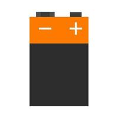
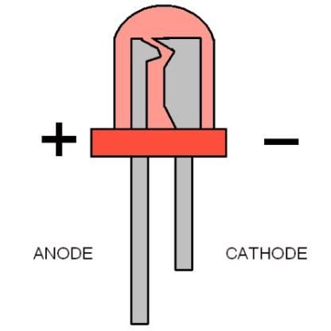
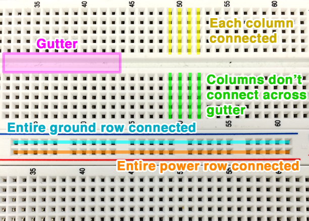
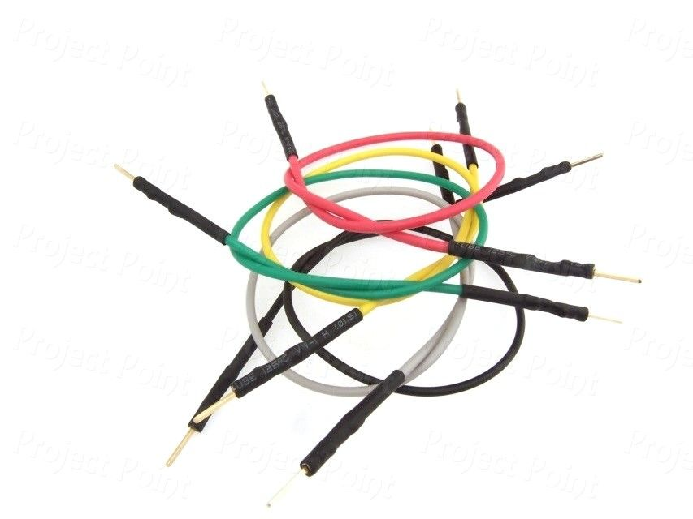
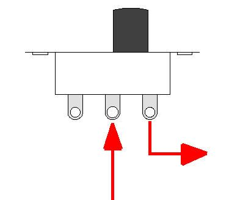
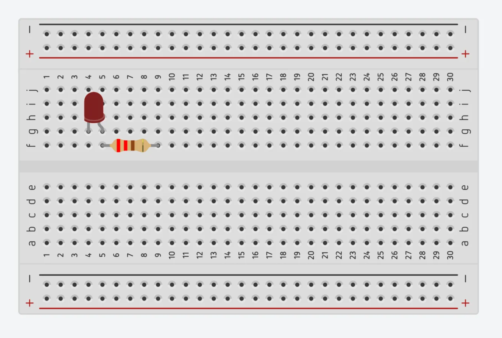
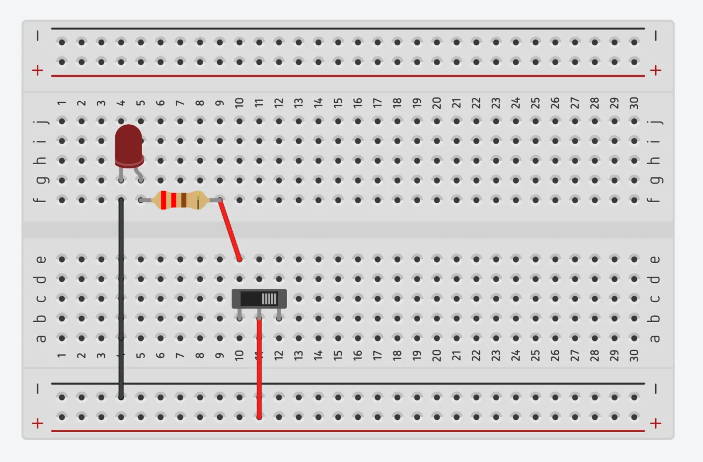
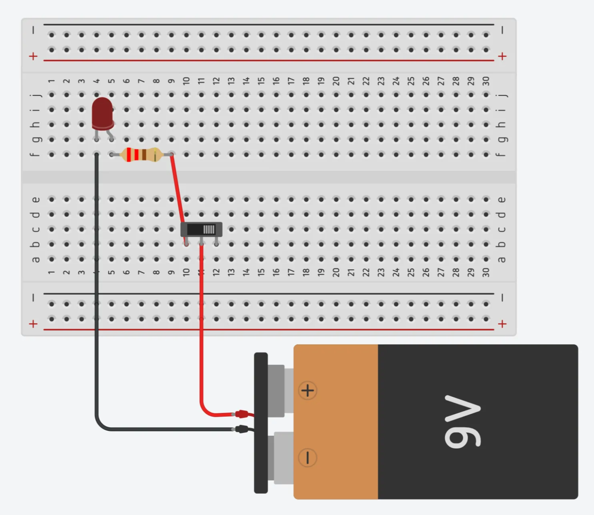
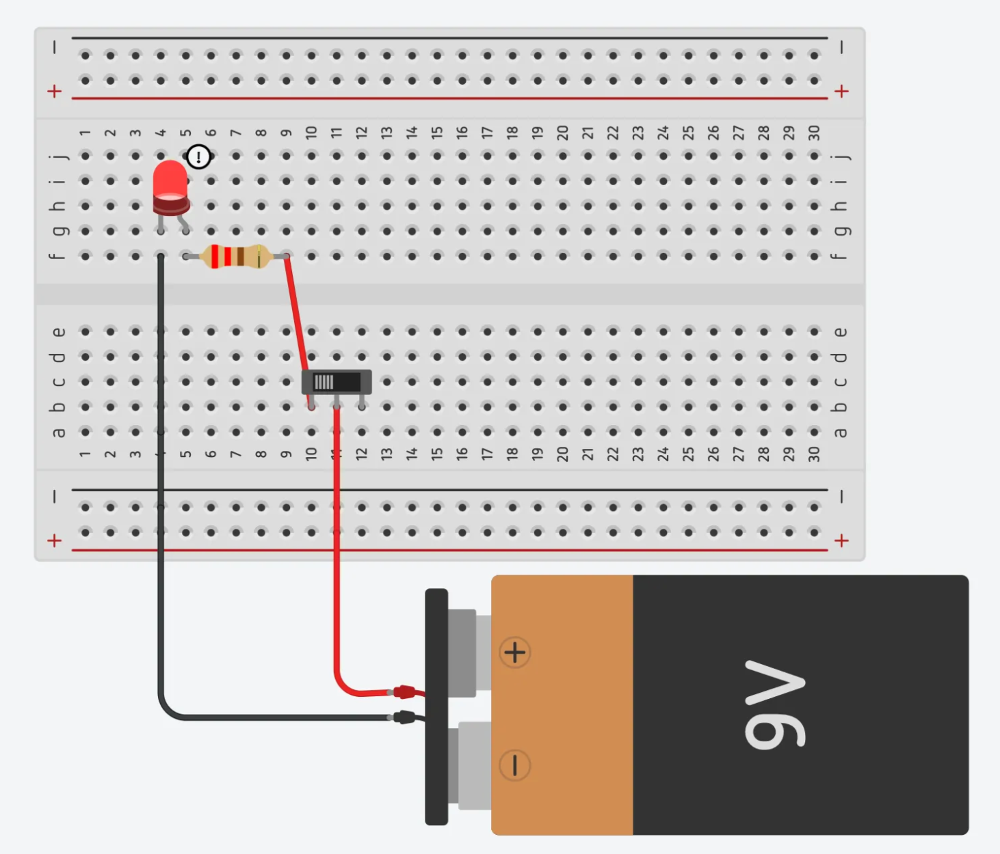
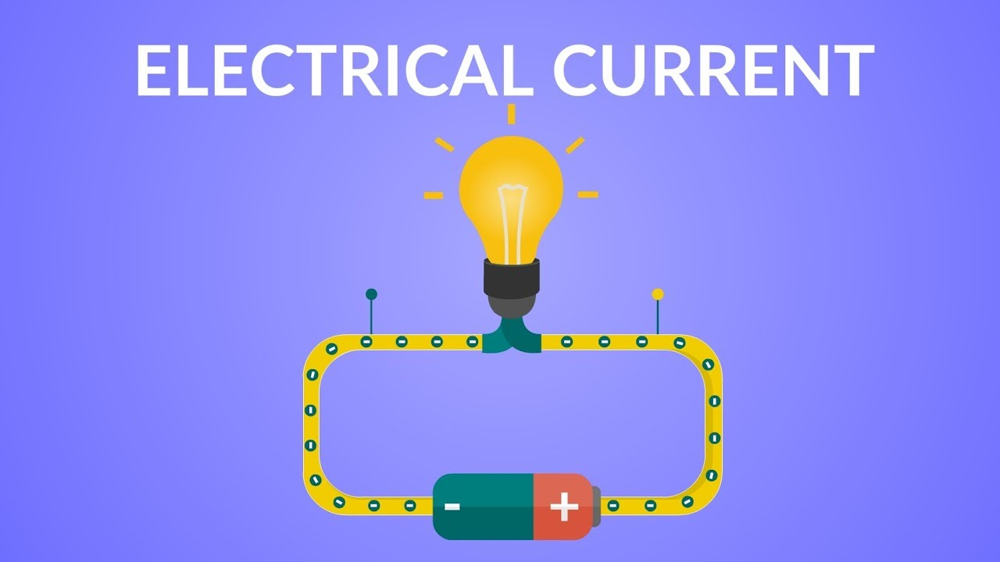

LED Circuit Instructions
Aim
Create a simple circuit to light up an LED using a 9V battery and a breadboard, with an optional switch to control the LED safely.
What You'll Need:
- 9V Battery – supplies power. 
- LED – a small light bulb that glows when current flows. 
- 220-ohm Resistor – limits current to protect the LED.
- Breadboard – a board to connect components without soldering. 
- Rows and Columns: The middle of the breadboard has rows of five connected holes, helping you connect components horizontally.
- Power Rails: The long lines on each side carry power from top to bottom.
- Parallel and Series Connections: Parts in the same row share power (parallel), while parts connected in a line create a step-by-step path (series).
- Jumper Wires – connect parts on the breadboard. 
- Switch (optional) – allows you to turn the LED on and off easily. 
Understanding the Breadboard :
A breadboard is like a reusable puzzle board for circuits, helping us connect parts safely and without soldering. Here’s a breakdown:Steps to Build the Circuit
-
Place the LED:
Identify the LED’s two legs:
- Insert the anode (longer leg) into a row on the breadboard.
- Insert the cathode (shorter leg) into another row.
- The longer leg is the anode (positive side), where power enters.
- The shorter leg is the cathode (negative side), where power exits.
-
Add the Resistor:
- Place one end of the resistor (220 ohm) in the same row as the LED's anode and the other end in a different row.
The resistor controls the electricity flowing to the LED, preventing it from burning out by keeping the current safe.
 -
Place the Switch (Optional):
- Insert the switch onto the breadboard, and connect jumper wires to control the circuit.
 -
Attach the Battery Clip to the Breadboard:
- Attach the battery clip to the battery.
- Connect the red wire from the battery clip to the + power rail and the black wire to the power
 -
Power the Circuit and Test the Switch:
- Double-check all connections, then press or toggle the switch to turn the LED on and. off.

How It Works:
When the battery is connected, electricity flows from the battery’s positive terminal through the red wire, resistor, and LED’s anode (long leg). It exits through the cathode (short leg) and goes to the ground, lighting up the LED. The switch interrupts or allows this flow of electricity, letting you turn the LED on and off easily.
Adding a switch makes it safe and easy to control the LED, helps conserve battery power, and prevents overheating. You’ve now built a complete LED circuit with a switch – great job!
